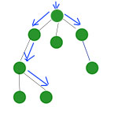

FRP + React, будуємо асинхронні інтерфейси
“Functional reactive programming (FRP) is a programming paradigm for reactive programming (asynchronous dataflow programming) using the building blocks of functional programming (e.g.map, reduce, filter)"
var topAds = tests.map(...).reduce(...).filter(...).sort(...).slice(0,6)
var targetText = Bacon.fromEventTarget(document, 'mousemove').filter(targetContainsText).map(getTextFromEvent).skipDuplicates();
Чи відноситься остання відповідь до останнього запиту?
var responses = targetText.flatMapLatest(postText);responses.onValue(processResponse);
var buttonPresses = buttons.asEventStream('click').map(processButtonClick);var responses = targetText.merge(buttonPresses).flatMapLatest(postText);
| Props | State |
|  | поточний стан компонента |
“Every time your data changes, it’s like hitting refresh in a server rendered app.”
dispatcherAPI =
collections : new Bacon.Bus()
...
#-------------
playlistsCollection = collections
.scan(new PLCollection(), (collection, ev) ->
collection[ev.action](ev.playlist)
...
playlistsCollection.onValue (PLC) ->
UI.player.setProps PLCollection: PLC
UI.progressbar.setProps currentTrack: ...
remoteActions = Bacon.fromEventTarget ws , 'message', ...
controls.plug(remoteActions)
monad
.map(...)
.reduce(...)